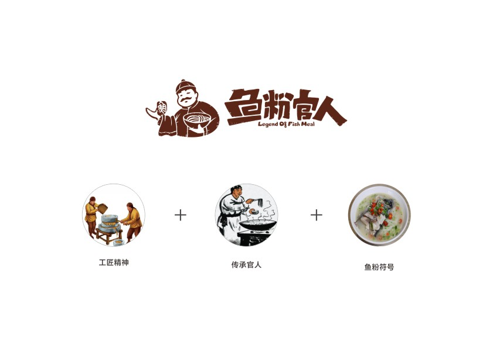

鱼粉，湖南特色美食，利用新鲜的鱼肉和米粉为主要原料制成，以郴州和衡阳最为出名，在当地甚至是很多人的每天必吃的。
虽然在本地人看来，这就是最好吃的家乡味道，但是，拿到其他的地方，别人未必会买账。
这种具有地方的特色小吃和饮食，如何实现在异地的大众化？显然，除了食物本身的美味之外，还需要更多的东西。
如何做？
一、重塑产品优势
街边的鱼粉小吃店给人的形象就是物廉价美，在消费升级的时代，不仅需要食物本身味道好，更要满足客户的情感诉求，我们在分析了消费群体之后，将鱼粉百年的经典味道和制作工艺，重新赋予食物本身，重新塑造价值，让更多的消费者了解鱼粉的文化，同时回忆起了小时候故乡的经典味道，食物不仅是用来果腹，更是融入了人们心中的情感。

所以我们卖的不是单纯的鱼粉，更是文化，情怀，和匠心。
文化，情怀和匠心如何体现？
传奇鱼粉香天下，经典传承两百年。
将鱼粉最初的历史渊源与品牌的起源相结合，打造出鱼粉传家的品牌文化，让地方特色这种共有的地域文化与自己的品牌发生联系，从而让品牌在众多的鱼粉中跳出来，有了个性的特色。
二、打造独一无二品牌IP
鱼粉是一个品类，本身不具备品牌的本质，所以，我们需要做的是让我们成为其中的代表，同时，更要成为餐饮中的一个独特的符号和印记。
因此，我们最终采用了“鱼粉官人”作为品牌名，既有品类，又有品牌，还通过拟人化的品牌塑造，打造出了一个有血有肉的品牌形象，从而让品牌有了更多耐人寻味的内涵。
品牌观念需要实体的设计来体现，在重新定义产品形象之后，还需要通过设计来传递品牌形象，所以，我们将传承，匠心和文化通过一个具有明显识别性的人物形象来进行创意，打造出鱼粉官人的超级识别符号，将品牌深厚的文化，产品的价值融合在logo形象中。
三、网红餐厅
餐厅不仅是用餐，还有社交的用途，所以，我们希望在这里用餐，你会也显得不一样。我们需要给消费者带来全新的用餐体验，我们将鱼粉传统文化与网红餐厅相结合，两者相互结合，呈现出全新的空间形象。
在店铺风格和环境营造上，我们将传统的文化融入其中，多用传统元素来营造古朴的氛围，门头的对联，木色的桌椅…..这些从侧面反应了食物本真的文化，同时也延续了品牌原有的理念，回归质朴，匠心专注。给消费者营造了一种独特的用餐体验。
四、仪式感的营造
为了再次深化品牌形象，我们将用餐的过程与传统的吃法结合，通过餐具的创新，重新定义了吃鱼粉的方式，加深了地道的地方韵味，让吃饭的过程充满仪式感。
一碗鱼粉的吃法，先是观汤色，闻其香，用勺子品尝几口浓郁高汤的鲜美，然后吃其中的鱼头鱼肉…..让客人在吃饭的过程中体验到新鲜感，加深了鱼粉官人的品牌形象。
从食材，烹饪，用餐过程，整个进行一种仪式感的塑造，从而让一碗鱼粉变得不普通。
通过统一全套的品牌形象建立，让整个店铺在消费者心中形成鲜明的形象，加深品牌记忆，同时体验化营销，让消费者进店就可以了解到，鱼粉从新鲜食材到古法烹饪再到享用美食的整个过程，从普通的食材到色香味俱全的传奇鱼粉之间，经历了多少道古法匠心工艺，这样让消费者也加入进来，感受制作食物的乐趣，从而更加珍惜每一份传奇鱼粉。
 2017年11月25日，鱼粉官人盛大开业，惊艳亮相寮步，开业当天来享用美食的客人络绎不绝，品牌之战初步告捷。
济南海右博纳品牌，立足珠三角，服务全国，专注品牌策略创建和视觉形象设计 ，在品牌定位、品牌视觉、营销工具与终端空间，为客户提供一站式品牌整合设计服务。14年时间，我们已经帮助数百家企业成功创建品牌形象，重塑品牌价值。
2017年11月25日，鱼粉官人盛大开业，惊艳亮相寮步，开业当天来享用美食的客人络绎不绝，品牌之战初步告捷。
济南海右博纳品牌，立足珠三角，服务全国，专注品牌策略创建和视觉形象设计 ，在品牌定位、品牌视觉、营销工具与终端空间，为客户提供一站式品牌整合设计服务。14年时间，我们已经帮助数百家企业成功创建品牌形象，重塑品牌价值。